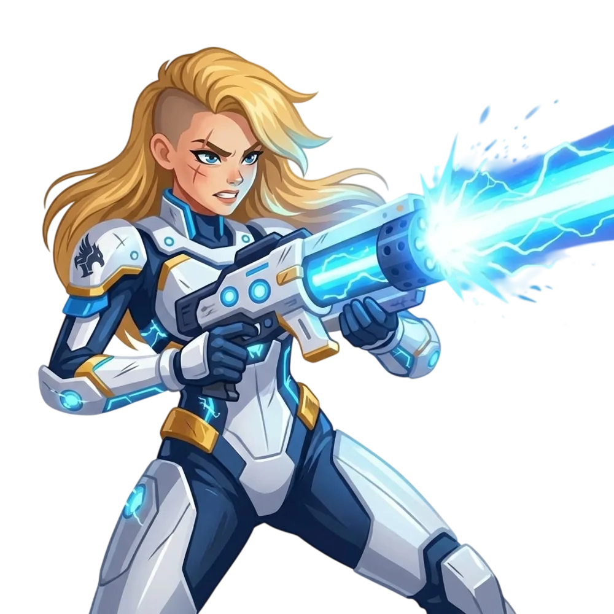

Cora fängt nicht als Heldin an. Sie fängt als Zuschauerin an.
Das ist die Geschichte von Cora: wie sie in einem Serverraum in einer kleinen Stadt anfängt - ohne Befugnisse und ohne Publikum -, den Daten bis in eine Halle ohne Adresse folgt und mit genau dem zurückkommt, was ihr dort gefehlt hat.
Die Entscheidung dahinter ist echt: Wem gibst du deinen Code, deine Kundendossiers und deine halbfertigen Ideen - und in welchem Land steht die Maschine, auf der sie landen? Den Konzern Omnivor gibt es nicht. Die Klauseln und die Rechenzentren, aus denen wir ihn gebaut haben, schon.



Was Omnivor darstellt - und was Cora dagegen setzt
Die Geschichte ist erfunden, die Gegenzüge sind es nicht. Jeder Akt hat ein Gegenstück im Produkt - Caches Starren zum Beispiel ist der Audit-Trail. Vier davon betreffen die Souveränität, zwei die Energie.
Dass das gratis sei. Dass es klimaneutral sei. Ein Modell zu betreiben kostet Strom, Wasser und Material, und daran ändert kein Zertifikat etwas. Wir sagen dir, woher der Strom kommt, wohin die Wärme geht und wie viele Token eine Aufgabe gekostet hat. Den Rest kannst du selber nachrechnen - und genau das ist der Unterschied zu Omnivor.
DEN KONZERN OMNIVOR GIBT ES NICHT. DIE KLAUSELN UND DIE RECHENZENTREN, AUS DENEN WIR IHN GEBAUT HABEN, SCHON.
Die Geschichte ist erfunden. Das Tor nicht.
Cora Code liefert die Coding-Modelle und den Inferenz-Server, Cora Gateway die Governance darüber - betrieben in Zürich und Genf. Schau dir an, wie das zusammenspielt.